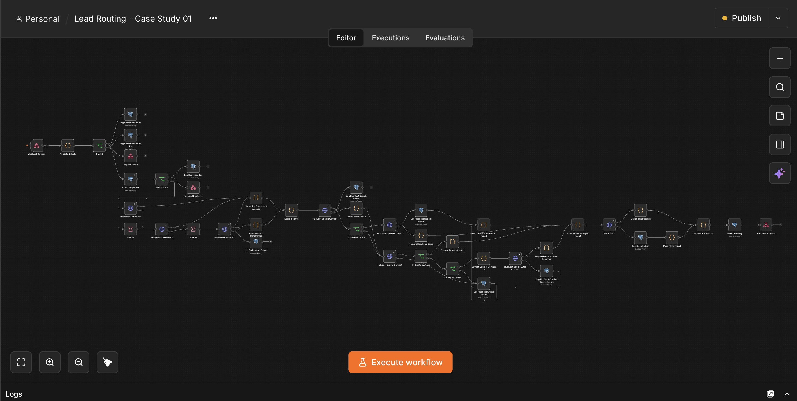
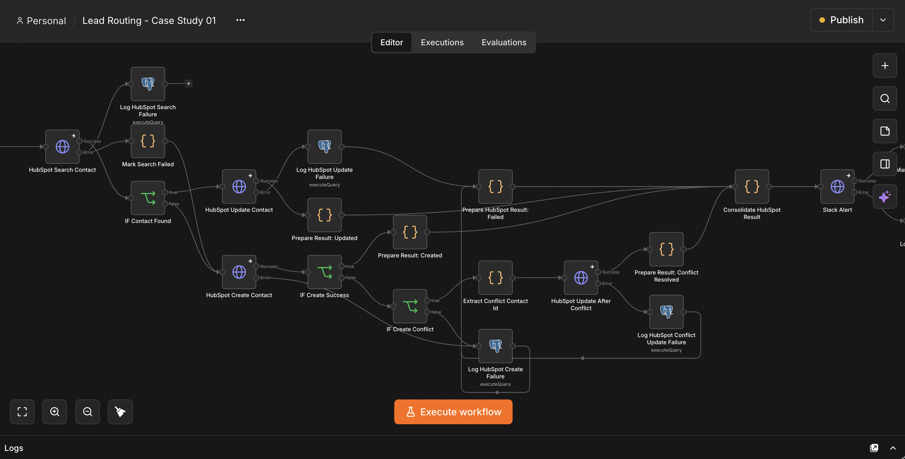
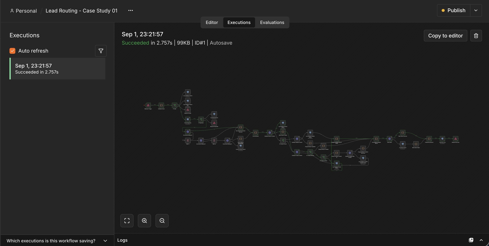

Lead routing, from form to CRM to Slack
The average company takes 42 hours to respond to a new lead. This pipeline does it in under 5 seconds, and keeps working even when a step in the chain fails.
The problem: leads sat in an inbox
What was actually happening before the build.
Every new lead landed in a shared inbox. Someone had to notice it, figure out who owned it, copy it into the CRM by hand, and ping the rep in Slack. Leads that took hours to reach often went to a competitor first.
No alert. No log. Just a rep noticing, days later, that a lead had gone cold.
What I built: a pipeline that runs itself
The system that replaced the inbox.
A self-hosted n8n workflow picks up every submission instantly: enriches it, routes it by territory or industry, writes it to the CRM, and notifies the rep. The rep's first message about a new lead is confirmation it's already assigned.
How it works: four stages, one path for every lead
The pipeline every submission moves through.
Every lead moves through the same four stages. Fail one, and it hands off to the recovery path below.
The form or webhook fires and the raw submission is written to the queue immediately, before any processing happens.
Missing fields get filled in: company size, domain, and source, pulled from the data already available to the workflow.
The client's routing rules match the enriched lead to an owner by territory, industry, or current rotation.
The lead is logged to the CRM and the owning rep is notified in the channel they actually check.


How failures are handled: retried, then escalated, never dropped
What happens when a stage fails.
A dropped lead costs more than a slow one. Every stage assumes the next one can fail.
- A stage fails once
- Retried automatically on a short delay. Most transient failures, like a CRM timeout, resolve before anyone sees an alert.
- A stage keeps failing
- After a set number of retries, it alerts the right channel with the full lead record attached, ready for a manual handoff.
- Every failure leaves a record
- Every failure is logged centrally. A missed alert still leaves a trail.

The result
Why speed is the entire pitch.
A 2007 study of InsideSales.com data, analyzed by MIT Sloan researcher James Oldroyd, tracked 15,000+ leads and 100,000+ call attempts across six companies over three years: contact at 30 minutes instead of 5 drops qualification odds 21x, and contact odds 100x. It's the oldest number on this site, and still the most-cited data on response-time decay because nobody has run a larger version since. The average B2B company still takes 42 hours to respond, and only 7% respond within 5 minutes. Someone has to notice the lead first. That's the bottleneck.
This pipeline closes that gap to seconds. 30 leads a week at 5 minutes of manual triage each is 10+ hours a month, done before a human finishes reading the notification. That's real money before counting a single recovered deal from leads that no longer go cold.
Stop losing leads to slow handoffs
Every day this isn't running is another lead going cold.
The workflow, the routing rules, and the error handling are all in the public repository, runnable end to end with one Docker Compose command.
Bring me your intake, your CRM, and the rules you already use to decide who gets what. In 20 minutes we'll map what this looks like built around your stack.
Prefer email? hello (at) prudie.dev